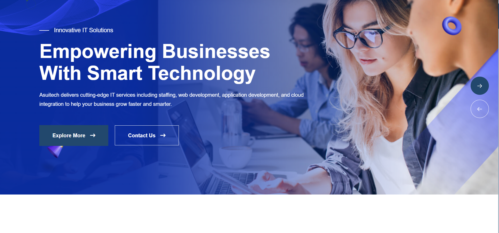

Feature-length case studies
Grab coffee, these are thorough. Each walks through strategy, cross-functional collaboration, and measurable impact, the full end-to-end UX process from discovery to validation.

Asuitech Solutions
Multi-brand e-commerce design system covering landing pages, product & category pages, checkout and post-purchase flows, tokens, components, and governance in Figma, iterated with analytics and A/B testing...

Sharecase
B2B lead-gen funnels for a stealth startup, landing pages, lead magnets, and product pages from wireframes to high-fidelity Figma UI, instrumented so every step of the funnel could be improved...
Stealth Startup
18+ months of end-to-end UX across B2C and B2B digital properties, e-commerce funnels, design systems in Figma/Sketch, and usability-testing-driven improvements cycle after cycle...

Accenture × JPMC
Two years designing enterprise banking interfaces on the JPMC engagement, secure auth flows, account dashboards, and internal tools with accessibility (WCAG) treated as a requirement, not an afterthought...

FyndMe
Career portfolio SaaS, category-first onboarding, template picker, builder canvas, and publish flow. Part resume-alternative, part digital identity. Designed end-to-end from zero to shipped product...

Wichita State University
Graduate assistantship: responsive web interfaces for student-facing pages, usability-testing-driven redesigns, and a unified information architecture for university services...